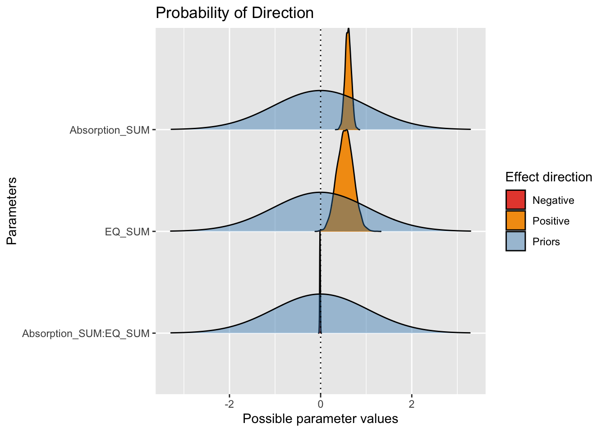

library(brms) # fitting Bayesian models
library(bayestestR) # helper functions for plotting and understanding the models
library(tidybayes) # helper functions for combining plotting and tidy data from models
library(tidyverse)
library(see) # helper functions for plotting objects from bayestestR
library(emmeans) # Handy function for calculating (marginal) effect sizes
library(patchwork) # Combine multiple plots10 Bayesian modelling
In this chapter, you will learn about the Bayesian approach to estimation by fitting regression models using the
10.1 Learning objectives
By the end of this chapter, you should be able to:
Understand the steps involved in fitting and exploring Bayesian regression models.
Apply these steps to simple linear regression.
Apply these steps to multiple linear regression.
Create data visualisation to graphically communication the results of your Bayesian regression models.
To follow along to this chapter and try the code yourself, please download the data files we will be using in this zip file.
In this chapter, we need a few extra packages. The one most likely to cause trouble is the main
10.2 Simple Linear Regression
10.2.1 Guided example (Schroeder & Epley, 2015)
For this guided activity, we will use data from the study by Schroeder & Epley (2015). We used this in the previous chapter for the independent activity, so we will explore the data set as the guided example in this chapter to see how we can refit it as a Bayesian regression model.
As a reminder, the aim of the study was to investigate whether delivering a short speech to a potential employer would be more effective at landing you a job than writing the speech down and the employer reading it themselves. Thirty-nine professional recruiters were randomly assigned to receive a job application speech as either a transcript for them to read or an audio recording of them reading the speech.
The recruiters then rated the applicants on perceived intellect, their impression of the applicant, and whether they would recommend hiring the candidate. All ratings were originally on a Likert scale ranging from 0 (low intellect, impression etc.) to 10 (high impression, recommendation etc.), with the final value representing the mean across several items.
For this example, we will focus on the hire rating (variable "Hire_Rating") to see whether the audio condition would lead to higher ratings than the transcript condition (variable "CONDITION").
Remember the key steps of Bayesian modelling from the lecture (Heino et al., 2018):
Identify data relevant to the research question;
Define a descriptive model, whose parameters capture the research question;
Specify prior probability distributions on parameters in the model;
Update the prior to a posterior distribution using Bayesian inference;
Check your model against data, and identify potential problems.
10.2.1.1 Identify data
For this example, we have the data from Schroeder and Epley with one outcome and one categorical predictor. The data are coded 0 for those in the transcript group and 1 for those in the audio group.
10.2.1.2 Define a descriptive model
The next step is to define a descriptive model. In the previous chapter, we used the "CONDITION" as a single categorical predictor of "Hire_Rating" as our outcome. You can enter this directly in the brm() function below, but its normally a good idea to clearly outline each component.
10.2.1.3 Specify prior probability of parameters
Once you get used to the
get_prior(schroeder_model1, # Model we defined above
data = schroeder_data) # Which data frame are we using? | prior | class | coef | group | resp | dpar | nlpar | lb | ub | source |
|---|---|---|---|---|---|---|---|---|---|
| b | default | ||||||||
| b | CONDITION1 | default | |||||||
| student_t(3, 4, 3) | Intercept | default | |||||||
| student_t(3, 0, 3) | sigma | 0 | default |
This tells us which priors we can set and what the default settings are. We have the prior, the class of prior, relevant coefficients, and the source which will all be default for now. The prior tells you what the default is. For example, there are flat uninformative priors on coefficients. When we set priors, we can either set priors for a whole class, or specific to each coefficient. With one predictor, there is only one coefficient prior to set, so it makes no difference. But when you have multiple predictors like later in the chapter, it becomes more useful.
Coefficients are assigned flat priors, meaning anything is possible between minus infinity and infinity. We can visualise the priors to see what they expect one-by-one. You will see how you can plot the priors yourself shortly.

The intercept and sigma are assigned student t distributions for priors, full for the intercept and a half student t for sigma. These are both quite weak priors to have minimal influence on the model, but they do not factor in your knowledge about the parameters. The default prior for the intercept peaks slightly above 0 and most likely between -5 and 15.

The default prior for sigma is a half student t distribution which peaks at 0. This plot demonstrates the full student t distribution, but sigma cannot be smaller than 0, so it would extend from 0 to the positive values.

For our example, we can define our own informative priors using information from Schroeder and Epley. Their paper contains four studies and our data set focuses on the fourth where they apply their findings to professional recruiters. Study 1 preceded this and used students, so we can pretend we are the researchers and use this as a source of our priors for the “later” study.
Focusing on hire rating, they found (pg. 881):
“Evaluators who heard pitches also reported being significantly more likely to hire the candidates (M = 4.34, SD = 2.26) than did evaluators who read exactly the same pitches (M = 3.06, SD = 3.15), t(156) = 2.49, p = .01, 95% CI of the difference = [0.22, 2.34], d = 0.40 (see Fig. 1)”.
So, for our intercept and reference group, we can set a normally distributed prior around a mean of 3 and SD of 3 for the transcript group. Note the rounded values since these are approximations for what we expect about the measures and manipulations. We are factoring in what we know about the parameters from our topic and method knowledge.
It is normally a good idea to visualise this process to check the numbers you enter match your expectations. For the intercept, a mean and SD of 3 look like this when generating the numbers from a normal distribution:

This turns out to be quite a weak prior since the distribution extends below 0 (which is not possible for this scale) all the way to 10 which is the upper limit of this scale. It covers pretty much the entire measurement scale with the peak around 3, so it represents a lenient estimate of what we expect the reference group to be.
We can set something more informative for the sigma prior knowing what we do about standard deviations. A common prior for the standard deviation is using an exponential distribution as it cannot be lower than 0. This means the largest density is around zero and the density decreases across more positive values. There is only one value to enter for an exponential distribution: the rate parameter. Values closer to zero cover a wider range, while larger values cover a smaller range. For this, a value of 1 means we peak at 0 and it drops off by 2 and beyond.

Note on the visualisation: Credit to the visualisation method goes to Andrew Heiss who shared some code on a Github Gist to visualise different priors. I adapted the code to use here to help you visualise the priors you enter. You can adapt the code to show any kind of prior used in brms models. All you need to do is specify the distribution family and parameters. Like the original code, you can even present a bunch of options to compare side by side.
For the coefficient, the mean difference was around 1 (calculated manually by subtracting one mean from the other) and the 95% confidence interval was quite wide from 0.22 to 2.34. As we are working out what prior would best fit our knowledge, we can compare some different options side by side. We can compare a stronger prior (SD = 0.5) vs a weaker prior (SD = 1).
priors <- c(prior(normal(1, 0.5), class = b),
prior(normal(1, 1), class = b)) # Set prior and class
priors %>%
parse_dist() %>% # Function from tidybayes/ggdist to turn prior into a dataframe
ggplot(aes(y = 0, dist = .dist, args = .args, fill = prior)) + # Fill in details from prior and add fill
stat_slab(normalize = "panels") + # ggdist layer to visualise distributions
scale_fill_viridis_d(option = "plasma", end = 0.9) + # Add colour scheme
guides(fill = "none") + # Remove legend for fill
facet_wrap(~prior) + # Split into a different panel for each prior
labs(x = "Value", y = "Density") +
theme_classic()
The stronger prior on the left shows we are expecting mainly positive effects with a peak over 1 but ranges between around -0.5 (transcript to be higher than audio) and 2 (audio to be higher than transcript). The weaker prior on the right shows we are still expecting the peak over 1, but it could span from -1.5 to around 3.5.
Lets say we think both positive and negatives effects are plausible but we expect the most likely outcome to be similar to study 1 from Schroeder and Epley. So, for this example we will go with the weaker prior. Now we have our priors, we can save them to a new object:
Note
Remember it is important to check the sensitivity of the results to the choice of prior. So, once we’re finished, we will check how stable the results are to an uninformative prior, keeping the defaults. Normally it is the opposite way around and using uninformative priors first, but I did not want to put off thinking about the priors.
10.2.1.4 Update the prior to the posterior
This is going to be the longest section as we are going to fit the
As the process relies on sampling using MCMC, it is important to set a seed within the function for reproducibility, so the semi-random numbers have a consistent starting point. This might take a while depending on your computer, then you will get a bunch of output for fitting the model and sampling from the MCMC chains.
schroeder_fit <- brm(
formula = schroeder_model1, # formula we defined above
data = schroeder_data, # Data frame we're using
family = gaussian(), # What distribution family do we want for the likelihood function? Many examples we use in psychology are Gaussian, but check the documentation for options
prior = priors, # priors we stated above
sample_prior = TRUE, # Setting this to true includes the prior in the object, so we can include it on plots later
seed = 1908,
file = "Models/Schroeder_model1" #Save the model as a .rds file
)
Note
When you have lots of data or complicated models, the fitting process can take a long time. This means its normally a good idea to save your fitted model to save time if you want to look at it again quickly. In the brm function, there is an argument called file. You write a character string for any further file directory and the name you want to save it as. Models are saved as a .rds file - R’s own data file format you can save objects in. Behind the scenes for this book, we must run the code every time we want to update it, so all the models you see will be based on reading the models as .rds files after we first fitted the models. If you save the objects, remember to refit them if you change anything like the priors, model, or data. If the file already exists though, it will not be overwritten unless you use the file_refit argument.
If you save the model as a .rds file, you can load them again using the read_rds() function from
There will be a lot of output here to explain the fitting and sampling process. For a longer explanation of how MCMC sampling works, see Ravenzwaaij et al. (2018), but for a quick overview, we want to sample from the posterior distribution based on the data and model. The default of
Now we have fitted the model, we can also double check the priors you set are what you wanted. You will see the source for the priors you set switched from default to user.
| prior | class | coef | group | resp | dpar | nlpar | lb | ub | source |
|---|---|---|---|---|---|---|---|---|---|
| normal(1, 1) | b | user | |||||||
| b | CONDITION1 | default | |||||||
| normal(3, 3) | Intercept | user | |||||||
| exponential(1) | sigma | 0 | user |
Now we have our model, we can get a model summary like any old linear model in R.
Family: gaussian
Links: mu = identity; sigma = identity
Formula: Hire_Rating ~ CONDITION
Data: Schroeder_data (Number of observations: 39)
Draws: 4 chains, each with iter = 2000; warmup = 1000; thin = 1;
total post-warmup draws = 4000
Regression Coefficients:
Estimate Est.Error l-95% CI u-95% CI Rhat Bulk_ESS Tail_ESS
Intercept 3.01 0.47 2.09 3.94 1.00 3402 2862
CONDITION1 1.57 0.57 0.46 2.66 1.00 3449 2879
Further Distributional Parameters:
Estimate Est.Error l-95% CI u-95% CI Rhat Bulk_ESS Tail_ESS
sigma 2.17 0.25 1.74 2.71 1.00 3617 2850
Draws were sampled using sampling(NUTS). For each parameter, Bulk_ESS
and Tail_ESS are effective sample size measures, and Rhat is the potential
scale reduction factor on split chains (at convergence, Rhat = 1).At the top, we have information on the model fitting process, like the family, data, and draws from the posterior summarising the chain iterations.
Population-level effects is our main area of interest. This is where we have the posterior probability distribution summary statistics. We will look at the whole distribution soon, but for now, we can see the median point-estimate for the intercept is 3.01 with a 95% credible interval between 2.09 and 3.94. This is what we expect the mean of the reference group to be, i.e., the transcript group.
We then have the median slope coefficient of 1.57 with a 95% credible interval between 0.46 and 2.66. This means our best guess for the mean difference / slope is an increase of 1.57 for the audio group. Note, you might get subtly different values to the output here since it is based on a semi-random sampling process, but the qualitative conclusions should be the same.
For convergence issues, if Rhat is different from 1, it can suggest there are problems with the model fitting process. You can also look at the effective sample size statistics (the columns ending in ESS). These should in the thousands, or at the very least in the hundreds (Flores et al., 2022) for both the bulk and tail. We will return to a final indicator of model fitting soon when we check the trace plots.
For a tidier summary of the parameters, we can also use the handy describe_posterior() function from
| Parameter | Median | CI | CI_low | CI_high | pd | ROPE_CI | ROPE_low | ROPE_high | ROPE_Percentage | Rhat | ESS | |
|---|---|---|---|---|---|---|---|---|---|---|---|---|
| 2 | b_Intercept | 3.006929 | 0.95 | 2.0932902 | 3.942043 | 1.00000 | 0.95 | -0.2330343 | 0.2330343 | 0 | 0.9999234 | 3382.849 |
| 1 | b_CONDITION1 | 1.567213 | 0.95 | 0.4562219 | 2.657129 | 0.99625 | 0.95 | -0.2330343 | 0.2330343 | 0 | 0.9999724 | 3426.619 |
We can use this as a way to create ROPE regions for the effects and it tells us useful things like the probability of direction for the effect (how much of the posterior is above or below zero).
10.2.1.4.1 Plotting the posterior distributions
Until now, we have focused on point-estimates and intervals of the posterior, but the main strength of Bayesian statistics is summarising the parameters as a whole posterior probability distribution, so we will now turn to the various plotting options.
The first plot is useful for seeing the posterior of each parameter and the trace plots to check on any convergence issues.

For this model, we have three plots: one for the intercept, one for the slope coefficient, and one for sigma. On the left, we have the posterior probability distributions for each. On the right, we have trace plots. By default,
These plots are useful for an initial feel of the parameter posteriors, but there are a great series of functions from the plot() function after loading the p_direction() tells you the probability of direction for each parameter, i.e., how much of the distribution is above or below 0? Wrapped in plot(), you can see the prior and posterior, with the posterior divided in areas above or below 0.

For this to work, you must specify priors in
We can see the pretty wide prior in blue, then the posterior. Almost all of the posterior distribution is above zero to show we’re pretty confident that audio is associated with higher hire ratings than transcript.
The next useful plot is seeing the 95% HDI / credible interval. On its own, hdi() will show you the 95% HDI for your parameters. Wrapped in plot(), you can visualise the HDI compared to zero for your main parameters. If the HDI excludes zero, you can be confident in a positive or negative effect, at least conditional on these data and model. Remember, there is a difference between the small world and big world of models. This is not the absolute truth, just the most credible values conditioned on our data and model.

Warning
These plots are informative for you learning about your model and the inferences you can learn from it. However, they would not be immediately suitable to enter into a report. Fortunately, they are created using
For this example, the 95% HDI excludes 0, so we can be confident the coefficient posterior is a positive effect, with the audio group leading to higher hire ratings than the transcript group.
Finally, we might not be interested in comparing the coefficients to a point-value of 0, we might have a stronger level of evidence in mind, where the coefficient must exclude a range of values in the ROPE process we explored in the previous chapter. For example, maybe effects smaller than 1 unit difference are too small to be practically/theoretically meaningful.
Note
Remember this is potentially the most difficult decision to make, maybe more so than choosing priors. Many areas of psychology do not have clear guidelines/expectations for the smallest effect sizes of interest, so it is down to you to explain and justify your approach based on your understanding of the topic area.
plot(rope(schroeder_fit,
range = c(-1, 1))) # What is the ROPE range for your smallest effects of interest? 
For this example, for a sample size of 39, we have pretty strong evidence in favour of a positive effect in the audio group. The 95% HDI excludes zero, but if we set a ROPE of 1 unit, we do not quite exclude it. This means if we wanted to be more confident that the effect exceeded the ROPE, we would need more data. This is just for demonstration purposes, I’m not sure if the original study would consider an effect of 1 as practically meaningful, or whether they would just be happy with any non-zero effect.
10.2.1.4.2 Hypothesis testing in brms
Following from the previous chapter, we saw we can also use Bayesian statistics to test hypotheses. This works in a modelling approach as
Hypothesis Tests for class b:
Hypothesis Estimate Est.Error CI.Lower CI.Upper Evid.Ratio Post.Prob
1 (CONDITION1) = 0 1.57 0.57 0.46 2.66 0.08 0.08
Star
1 *
---
'CI': 90%-CI for one-sided and 95%-CI for two-sided hypotheses.
'*': For one-sided hypotheses, the posterior probability exceeds 95%;
for two-sided hypotheses, the value tested against lies outside the 95%-CI.
Posterior probabilities of point hypotheses assume equal prior probabilities.
Note
We must state a character hypothesis which requires you to select a parameter. Here, we focus on the "CONDITION" parameter, i.e., our slope, which must match the name in the model. We can then state values to test against, like here against a point-null of 0 for a Bayes factor. Alternatively, you can test posterior odds where you compare masses of the posterior like "CONDITION > 0".
The key part of the output is the evidence ratio (Evid.Ratio), but we also have the estimate and 95% credible interval. As we are testing a point-null of 0, we are testing the null hypothesis against the alternative of a non-null effect. As the value is below 1, it suggests we have evidence in favour of the alternative compared to the null. I prefer to express things above 1 as its easier to interpret. You can do this by dividing 1 by the ratio, which should provide a Bayes factor of 12.5 here.
Alternatively, you can calculate the posterior odds by stating regions of the posterior to test. For example, if we used "CONDITION1 > 0", this would provide a ratio of the posterior probability of positive effects above 0 to the posterior probability of negative effects below 0. For this example, this would be a posterior odds of 265.7 in favour of positive effects. Note, when all the posterior is above 0, you can get a result of Inf (infinity) as all the evidence is in favour of positive effects.
Hypothesis Tests for class b:
Hypothesis Estimate Est.Error CI.Lower CI.Upper Evid.Ratio Post.Prob
1 (CONDITION1) > 0 1.57 0.57 0.63 2.5 265.67 1
Star
1 *
---
'CI': 90%-CI for one-sided and 95%-CI for two-sided hypotheses.
'*': For one-sided hypotheses, the posterior probability exceeds 95%;
for two-sided hypotheses, the value tested against lies outside the 95%-CI.
Posterior probabilities of point hypotheses assume equal prior probabilities.10.2.1.4.3 Calculating and plotting conditional effects
For the final part of exploring the posterior, you might be interested in the estimates for each group or condition in your predictor. When you only have two groups, you can calculate the point estimate using the intercept and slope, but we can use the
emmeans(schroeder_fit, # add the model object
~ CONDITION) # What predictor do you want marginal means of? CONDITION emmean lower.HPD upper.HPD
0 3.01 2.06 3.91
1 4.58 3.75 5.42
Point estimate displayed: median
HPD interval probability: 0.95 This provides the median and 95% HDI values for the posterior for each group. The conditional_effects() which you can use to plot the conditional effects.

By default, it plots the median of the posterior for each group and the error bars represent the 95% HDI around the median. Behind the scenes, it uses ggplot2, so you can customise the graphs to make them better suited for a report.
Warning
When you use the conditional_effects() function, the type of plot it produces will depend on the data type. All the way back when we read the data in, we turned CONDITION into a factor. If you left it numeric, all the modelling would work the same, but the plot here would be more of a scatterplot. There are additional arguments you can use, so see the function help for further customisation options.
conditional_plot <- conditional_effects(schroeder_fit)
plot(conditional_plot,
plot = FALSE)[[1]] + #I don't know why you need this, but it doesn't work without
theme_classic() +
scale_y_continuous(limits = c(0, 10), breaks = seq(0, 10, 2)) +
scale_x_discrete(labels = c("Transcript", "Audio")) +
labs(x = "Speech Group", y = "Mean Hire Rating")
10.2.1.5 Model checking
Finally, we have our model checking procedure. We already looked at some information for this such as Rhat, effect sample size, and the trace plots. This suggests the model fitted OK. We also want to check the model reflects the properties of the data. This does not mean we want it exactly the same and overfit to the data, but it should follow a similar pattern to show our model captures the features of the data.
Bayesian models are generative, which means once they are fitted, we can use them to sample values from the posterior and make predictions from it. One key process is called a posterior predictive check which takes the model and uses is to generate new samples. This shows how you have conditioned the model and what it expects.
The plot below is a
pp_check(schroeder_fit,
ndraws = 100) # How many draws from the posterior? Higher values means more lines
For this example, it does an OK job at capturing the pattern of data and the bulk of the observed data follows the generated curves. However, you can see the data are quite flat compared to the predicted values. As we expect a Gaussian distribution, the model will happily produce normal curves. The model also happily expects values beyond the range of data as our scale is bound to 0 and 10. This is hugely common in psychological research as we expect Gaussian distributions from ordinal bound data. So, while this model does an OK job, we could potentially improve it by focusing on an ordinal regression model so we can factor in the bounded nature of the measure if we had the raw items.
10.2.1.5.1 Check model sensitivity to different priors
The final thing we will check for this model is how sensitive it is to the choice of prior. A justifiable informative prior is a key strength of Bayesian statistics, but it is important to check the model under at least two sets of priors. For this example, we will compare the model output under the default package priors and our user defined priors we used all along.
In the code below, we have omitted the prior argument, so we are fitting the exact same model as before but using the default package priors.
If we run the summary() function again, you can check the intercept and predictor coefficients to see how they differ to the first model we fitted. Ideally, they should provide us with similar inferences, such as a similar magnitude and in the same direction. It is never going to be exactly the same under different priors, but we want our conclusions robust to the choice of prior we use.
Family: gaussian
Links: mu = identity; sigma = identity
Formula: Hire_Rating ~ CONDITION
Data: Schroeder_data (Number of observations: 39)
Draws: 4 chains, each with iter = 2000; warmup = 1000; thin = 1;
total post-warmup draws = 4000
Regression Coefficients:
Estimate Est.Error l-95% CI u-95% CI Rhat Bulk_ESS Tail_ESS
Intercept 2.90 0.52 1.89 3.93 1.00 3369 2457
CONDITION1 1.82 0.73 0.33 3.24 1.00 3578 2469
Further Distributional Parameters:
Estimate Est.Error l-95% CI u-95% CI Rhat Bulk_ESS Tail_ESS
sigma 2.22 0.27 1.77 2.83 1.00 3446 2868
Draws were sampled using sampling(NUTS). For each parameter, Bulk_ESS
and Tail_ESS are effective sample size measures, and Rhat is the potential
scale reduction factor on split chains (at convergence, Rhat = 1).To make it easier to compare, we can isolate the key information from each model and present them side by side. You can see below how there is little difference in the intercept between both models. The median is similar, both probability of direction values are 100%, and the 95% HDI ranges across similar values. For our user prior, the coefficient is a little more conservative, but the difference is also small here, showing how our results are robust to the choice of prior.
| Model | Parameter | Median Estimate | Lower 95% HDI | Upper 95% HDI | Prob Direction |
|---|---|---|---|---|---|
| User prior | b_Intercept | 3.01 | 2.09 | 3.94 | 1.00 |
| Default prior | b_Intercept | 2.90 | 1.89 | 3.93 | 1.00 |
| User prior | b_CONDITION1 | 1.57 | 0.46 | 2.66 | 1.00 |
| Default prior | b_CONDITION1 | 1.84 | 0.33 | 3.24 | 0.99 |
10.2.2 Independent activity (Brandt et al., 2014)
For an independent activity, we will use data from the study by (Brandt et al., 2014). The aim of Brandt et al. was to replicate a relatively famous social psychology study (Banerjee et al., 2012) on the effect of recalling unethical behaviour on the perception of brightness.
In common language, unethical behaviour is considered as “dark”, so the original authors designed a priming experiment where participants were randomly allocated to recall an unethical behaviour or an ethical behaviour from their past. Participants then completed a series of measures including their perception of how bright the testing room was. Brandt et al. were sceptical and wanted to replicate this study to see if they could find similar results.
Participants were randomly allocated ("ExpCond") to recall an unethical behaviour (n = 49) or an ethical behaviour (n = 51). The key outcome was their perception of how bright the room was ("welllit"), from 1 (not bright at all) to 7 (very bright). The research question was: Does recalling unethical behaviour lead people to perceive a room as darker than if they recall ethical behaviour?
In the original study, they found that the room was perceived as darker in the unethical condition compared to the ethical condition. The means and standard deviations of Banerjee et al. are reproduced from Table 2 in Brandt et al. below and might be useful for thinking about your priors later.
| Condition | Mean (SD) |
|---|---|
| Unethical | 4.71 (0.85) |
| Ethical | 5.30 (0.97) |
Try this
Using your understanding of the design, apply what you learnt in the guided example to this independent activity to address the research question. Following the Bayesian modelling steps, fit at least two models: one using the default priors and one using informative priors. Explore the model results, think about what you would conclude for the research question, and answer the questions below.
Is the coefficient positive or negative?
-
Can we be confident in the direction of the coefficient?
-
What would your conclusion be for the research question?
-
Are the results sensitive to the choice between default and user priors?
-
Does the normal model capture the features of the data?
Explain the answers
The experimental condition coefficient is a positive but small value.
Although the coefficient is positive, there is substantial overlap across 0.
Given the uncertainty around the coefficient, we would not be confident in the effect of experimental condition on perceived brightness.
The results should be robust to the choice of prior if you based it on the means and SDs from the original Banerjee et al. study. There was little difference in my user and default priors.
In contrast to the Schroeder and Epley data where the ordinal data was approximately normal, there is no getting away from the characteristic ordinal distribution with peaks at each integer. Really, we would need to explore something like ordinal regression to capture the properties of the data. It is not something we covered in the Bayesian lectures or activites, but see the bonus section showing what an ordinal model would look like applied to these data.
You can check your attempt with the solution below but remember this is based on semi-random number generation, so there might be some variation in your precise values, but the qualitative conclusions should be consistent. If you want to double check your process is accurate, you can download our saved models from the Github repository and reproduce the results that way.
Show me the process
Step 1. Identify data relevant to the research question
To follow the modelling process, you should have read in the data from Brandt et al.
Step 2. Define a descriptive model
For this model, we are again working with simple linear regression. We have one outcome of welllit and one categorical predictor of ExpCond. We can also check what priors we can specify:
| prior | class | coef | group | resp | dpar | nlpar | lb | ub | source |
|---|---|---|---|---|---|---|---|---|---|
| b | default | ||||||||
| b | ExpCond1 | default | |||||||
| student_t(3, 5.5, 2.5) | Intercept | default | |||||||
| student_t(3, 0, 2.5) | sigma | 0 | default |
Step 3. Specify prior probability distribution on model parameters
For the intercept, we know the scale ranges from 1 to 7, and for our reference group of ethical priming, the mean (SD) from Banerjee et al. was 5.3 (0.97). This means we can expect the intercept to be somewhat in the middle of the scale, so after some tweaking, you could use a prior of:

For the coefficient, the brightness rating was 0.59 units lower in the unethical priming group compared to the ethical priming group. This is quite a small effect and whether you favour an effect in one direction or the other depends on how convinced you are in the manipulation. I set the prior as a normal distribution over 0 with an SD of 0.5. This means 0 is the most likely value and most of the mass is between -1 and 1 to consider effects in a positive or negative direction.

Step 4. Update the prior to a posterior distribution
For the first model, I will just use the default priors to have minimal influence on the parameters.
To summarise the first model, the effects are seemingly in the opposite direction. In this default prior model, the unethical group was 0.21 units higher on the posterior median than the ethical group. This means the unethical group perceived the room as brighter, but there is a lot of uncertainty with the mass of the posterior spanning across negative and positive values.
Family: gaussian
Links: mu = identity; sigma = identity
Formula: welllit ~ ExpCond
Data: Brandt_data (Number of observations: 100)
Draws: 4 chains, each with iter = 2000; warmup = 1000; thin = 1;
total post-warmup draws = 4000
Regression Coefficients:
Estimate Est.Error l-95% CI u-95% CI Rhat Bulk_ESS Tail_ESS
Intercept 5.16 0.18 4.79 5.52 1.00 4095 3013
ExpCond1 0.21 0.25 -0.29 0.69 1.00 3879 3192
Further Distributional Parameters:
Estimate Est.Error l-95% CI u-95% CI Rhat Bulk_ESS Tail_ESS
sigma 1.29 0.10 1.11 1.49 1.00 3722 2380
Draws were sampled using sampling(NUTS). For each parameter, Bulk_ESS
and Tail_ESS are effective sample size measures, and Rhat is the potential
scale reduction factor on split chains (at convergence, Rhat = 1).Now, we can fit a second model using our informed priors.
Using our informed priors, we get very similar results. The intercept estimates are almost identical and the coefficient estimates are marginally smaller than our default priors. This means our inferences are robust to the choice of priors. Apart from when we compare the estimates from each model, we will focus on the second model and our informed priors.
Family: gaussian
Links: mu = identity; sigma = identity
Formula: welllit ~ ExpCond
Data: Brandt_data (Number of observations: 100)
Draws: 4 chains, each with iter = 2000; warmup = 1000; thin = 1;
total post-warmup draws = 4000
Regression Coefficients:
Estimate Est.Error l-95% CI u-95% CI Rhat Bulk_ESS Tail_ESS
Intercept 5.16 0.17 4.84 5.48 1.00 4136 2989
ExpCond1 0.17 0.22 -0.26 0.61 1.00 4246 2923
Further Distributional Parameters:
Estimate Est.Error l-95% CI u-95% CI Rhat Bulk_ESS Tail_ESS
sigma 1.28 0.09 1.12 1.48 1.00 3232 2918
Draws were sampled using sampling(NUTS). For each parameter, Bulk_ESS
and Tail_ESS are effective sample size measures, and Rhat is the potential
scale reduction factor on split chains (at convergence, Rhat = 1).

Step 5. Check your model against the data
Our model diagnostics all looked respectable. Rhat values were all 1 and ESS were in the thousands. If we compare our two models, we get similar estimates from our default and informed priors.
model1 <- describe_posterior(brandt_fit1) %>%
dplyr::mutate(Model = "User prior") %>%
dplyr::select(Model, Parameter, Median, CI_low, CI_high)
model2 <- describe_posterior(brandt_fit2) %>%
dplyr::mutate(Model = "Default prior") %>%
dplyr::select(Model, Parameter, Median, CI_low, CI_high)
bind_rows(model1, model2) %>%
arrange(desc(Parameter)) %>%
knitr::kable(digits = 2,
col.names = c("Model", "Parameter", "Median Estimate", "Lower 95% HDI", "Upper 95% HDI"))| Model | Parameter | Median Estimate | Lower 95% HDI | Upper 95% HDI |
|---|---|---|---|---|
| User prior | b_Intercept | 5.16 | 4.79 | 5.52 |
| Default prior | b_Intercept | 5.16 | 4.84 | 5.48 |
| User prior | b_ExpCond1 | 0.21 | -0.29 | 0.69 |
| Default prior | b_ExpCond1 | 0.18 | -0.26 | 0.61 |
However, in the posterior predictive check, this is a good example of when the assumed distribution does not capture features of the underlying data. Whereas Schroeder and Epley approximated normal data, there is no getting away from this being characteristically ordinal. For the purposes of the self-test questions, you can persist with the normal model as that’s what the original authors and replicators used, but I will include a bonus section below on what it looks like as an ordinal model.

10.3 Multiple Linear Regression
10.3.1 Guided example (Heino et al., 2018)
For the second guided example we covered in the lecture, we will explore the model included in Heino et al. (2018) for their Bayesian data analysis tutorial. They explored the feasibility and acceptability of the ”Let’s Move It” intervention to increase physical activity in 43 older adolescents.
In this section, we will work through their multiple regression model following the Bayesian modelling steps. There will be less explanation than the simple linear regression section as we are following the same processes, but I will highlight if there is anything new or important to consider when we have two or more predictors.
10.3.1.1 Identify data
Heino et al. (2018) randomised participants into two groups ("intervention") for control (0) and intervention (1) arms (group sessions on motivation and self-regulation skills, and teacher training). Their outcome was a measure of autonomous motivation ("value") on a 1-5 scale, with higher values meaning greater motivation. They measured the outcome at both baseline (0) and six weeks after (1; "time").
Their research question was: To what extent does the intervention affect autonomous motivation?
# In contrast to the original article, deviation coding given the interaction
heino_data <- read_csv("data/Heino-2018.csv") %>%
group_by(ID, intervention, time) %>%
summarise(value = mean(value, na.rm = TRUE)) %>%
mutate(intervention = factor(case_when(intervention == 0 ~ -0.5, .default = 0.5)),
time = factor(case_when(time == 0 ~ -0.5, .default = 0.5))) %>%
ungroup()
Note
Part of their tutorial discusses a bigger mixed effects model considering different scenarios, but for this demonstration, we’re just averaging over the scenarios to get the mean motivation. We also convert intervention and time to factors so they work nicely in plotting options later.
10.3.1.2 Define a descriptive model
I recommend reading the article as they explain this process in more detail. We essentially have an outcome of autonomous motivation ("value") and we want to look at the interaction between "intervention" and "time". They define a fixed intercept in the model with the 1 + part. Its also technically a mixed effects model as they define a random intercept for each participant ((1 | ID)) to ensure we recognise time is within-subjects.
Note
By default, R includes a fixed intercept (the 1 + part) in the model, so you would get the same results without adding it to the model. However, people often include it so it is explicit in the model formula.
10.3.1.3 Specify prior probability of parameters
Compared to simple linear regression, as you add predictors, the number of priors you can set also increase. In the output below, you will see how you can enter a prior for all beta coefficients or one specific for each predictors. There are also different options for setting a prior for standard deviations since we now have the group-level standard deviation for the random effect and sigma for the distribution family since we are assuming the outcome is normal.
Warning: Rows containing NAs were excluded from the model.| prior | class | coef | group | resp | dpar | nlpar | lb | ub | source |
|---|---|---|---|---|---|---|---|---|---|
| b | default | ||||||||
| b | interventionM0.5 | default | |||||||
| b | time0.5 | default | |||||||
| b | time0.5:interventionM0.5 | default | |||||||
| student_t(3, 3.9, 2.5) | Intercept | default | |||||||
| student_t(3, 0, 2.5) | sd | 0 | default | ||||||
| sd | ID | default | |||||||
| sd | Intercept | ID | default | ||||||
| student_t(3, 0, 2.5) | sigma | 0 | default |
Note, you get a warning about missing data but since its a type of mixed effects model, we just have fewer observations in some conditions instead of the whole case being removed.
This is another place where I recommend reading the original article for more information. They discuss their choices and essentially settle on wide weak priors for the coefficients to say small effects are more likely but they allow larger effects. The two standard deviation classes are then assigned relatively wide Cauchy priors.

10.3.1.4 Update prior to posterior
This is going to be the longest section as we are going to fit the
As the process relies on sampling using MCMC, it is important to set a seed for reproducibility, so the semi-random numbers have a consistent starting point. This might take a while depending on your computer, then you will get a bunch of output for fitting the model and sampling from the MCMC chains. Remember, we save all the models using the file argument, so its easier to load them later. If you update the model, you must use the file_refit argument or it will not change when you use the same file name.
Now we have fitted the model, let’s have a look at the summary.
Family: gaussian
Links: mu = identity; sigma = identity
Formula: value ~ 1 + time * intervention + (1 | ID)
Data: Heino_data (Number of observations: 68)
Draws: 4 chains, each with iter = 2000; warmup = 1000; thin = 1;
total post-warmup draws = 4000
Multilevel Hyperparameters:
~ID (Number of levels: 40)
Estimate Est.Error l-95% CI u-95% CI Rhat Bulk_ESS Tail_ESS
sd(Intercept) 0.70 0.10 0.52 0.92 1.00 713 1252
Regression Coefficients:
Estimate Est.Error l-95% CI u-95% CI Rhat Bulk_ESS
Intercept 3.61 0.16 3.29 3.93 1.00 728
time0.5 0.18 0.11 -0.04 0.40 1.00 3181
interventionM0.5 0.07 0.26 -0.45 0.57 1.00 830
time0.5:interventionM0.5 -0.09 0.18 -0.43 0.26 1.00 2781
Tail_ESS
Intercept 1238
time0.5 2485
interventionM0.5 1281
time0.5:interventionM0.5 2555
Further Distributional Parameters:
Estimate Est.Error l-95% CI u-95% CI Rhat Bulk_ESS Tail_ESS
sigma 0.33 0.05 0.25 0.45 1.00 1157 1843
Draws were sampled using sampling(NUTS). For each parameter, Bulk_ESS
and Tail_ESS are effective sample size measures, and Rhat is the potential
scale reduction factor on split chains (at convergence, Rhat = 1).The model summary is very similar to the examples in the simple linear regression section, but we also have a new section for group-level effects since we added a random intercept for participants.
Exploring the coefficients, all the effects are pretty small, with the largest effect being 0.10 units. There is quite a bit of uncertainty here, with 95% credible intervals spanning negative and positive effects, but the sample size is quite small to learn anything meaningful from two groups.
In more complicated models like this, plotting is going to be your best friend for understanding what is going on. First up, we can check the posteriors and trace plots, although we will work through model checking in the next section.


The posteriors are quite wide and spread over 0 for the coefficients. The trace plots do not suggest there are cause for concern around convergence in the model.
The next key plot is seeing the probability of direction and with the priors superimposed.

On this plot, you can see how wide the priors were. They are almost flat to cover coefficients from -10 to 10, with the posterior distributions peaking around 0. These plots also show how there is not much we can conclude from the results.
Finally, we can take a closer look at the 95% HDI of the posterior distributions.

Now we zoom in a little more without the scale of the wide priors and there is further indication the mass of the coefficient posteriors are centered over 0. We would need more data to make firm conclusions about the effectiveness of the intervention. The data comes from a feasibility study, so the sample size was pretty small and its mainly about how receptive participants are to the intervention.
10.3.1.4.1 Calculating and plotting conditional effects
As a bonus extra since its not included in Heino et al., you can also use the
# Surround with brackets to both save and output
(heino_means <- emmeans(heino_fit, # add the model object
~ time | intervention)) # We want to separate time by levels of interventionintervention = 0.5:
time emmean lower.HPD upper.HPD
-0.5 3.61 3.30 3.94
0.5 3.79 3.47 4.12
intervention = -0.5:
time emmean lower.HPD upper.HPD
-0.5 3.69 3.30 4.08
0.5 3.77 3.41 4.21
Point estimate displayed: median
HPD interval probability: 0.95 This provides the median value of the posterior for the combination of time and intervention. We can see pretty clearly there is not much going on, with very little difference across the estimates and all the 95% credible intervals overlapping.
Depending on how you want to express the marginal means, you can also use the
intervention = 0.5:
contrast estimate lower.HPD upper.HPD
(time-0.5) effect -0.0904 -0.1983 0.0201
time0.5 effect 0.0904 -0.0201 0.1983
intervention = -0.5:
contrast estimate lower.HPD upper.HPD
(time-0.5) effect -0.0435 -0.1834 0.0996
time0.5 effect 0.0435 -0.0996 0.1834
Point estimate displayed: median
HPD interval probability: 0.95 Finally, we can plot the conditional effects which is normally a good idea to help your reader understand your results. In this object, I have used the effects argument to specify which population level effect I want plotting. If you omit the effects argument, you would receive three plots for this example: one for the partial effect of each predictor and one for the interaction.

Like the simple linear regression example, this is useful for your own understanding, but it might not be quite appropriate for inserting immediately into a report. Once you save the plot as an object, you can add
# Save initial plot of the interaction
conditional_plot <- conditional_effects(heino_fit,
effects = "time:intervention")
# Call the plot and stop legend being included to prevent duplication later
plot(conditional_plot,
plot = FALSE,
cat_args = list(show.legend = F))[[1]] + # No idea why, but doesn't work without the subsetting
theme_classic() +
scale_y_continuous(limits = c(1, 5),
breaks = seq(1, 5, 1)) +
scale_x_discrete(labels = c("Baseline", "Six weeks")) +
labs(x = "Time", y = "Autonomous Motivation") +
scale_color_viridis_d(option = "D",
begin = 0.1, end = 0.7,
name = "Group",
labels = c("Control", "Intervention")) # Add neater legend labels
10.3.1.4.2 Model fit and comparison
Depending on your research question and theoretical understanding of the variables you are working with, you might be interested in comparing different models and assessing their fit. It is not something Heino et al. included, but you could compare their model to one without the interaction (lets pretend that is theoretically justified). Instead of refitting a whole new model, we can update the model to a change in formula. All other settings like the priors remain the same.
First, we can calculate the \(R^2\) estimate for the proportion of variance in your outcome that your predictors explain.
Estimate Est.Error Q2.5 Q97.5
R2 0.7983655 0.05632931 0.6604283 0.8748871We can also compare the two models side by side. The second model actually has a slightly higher \(R^2\) estimate, but there is very little to choose between the two models.
R2_model1 <- as.data.frame(bayes_R2(heino_fit))
R2_model2 <- as.data.frame(bayes_R2(heino_fit2))
R2_table <- bind_rows(R2_model1, R2_model2)
rownames(R2_table) <- c("Model with interaction", "Model without interaction")
knitr::kable(R2_table,
digits = 2,
row.names = TRUE,
col.names = c("R2 Estimate", "Estimated Error", "Lower 95% HDI", "Upper 95% HDI"))| R2 Estimate | Estimated Error | Lower 95% HDI | Upper 95% HDI | |
|---|---|---|---|---|
| Model with interaction | 0.80 | 0.06 | 0.66 | 0.87 |
| Model without interaction | 0.81 | 0.05 | 0.68 | 0.88 |
10.3.1.5 Model check
In previous output, there were no immediate causes of concern. Trace plots showed good mixing of the chains, R-hat values were no higher than 1.01, and effective sample size values were close to the thousands or higher.
As the final step, we can look at the posterior predictive check to make sure the model is capturing the features of the data. The model maps onto the data quite well, with the samples largely following the underlying data. We are still using metric models to analyse ultimately ordinal data (despite calculating the mean response), so the expected values go beyond the range of data (1-5), but it is good enough with that caveat in mind.

Try this
If you scroll to the end of the Heino et al. article, they demonstrate how you can fit an ordinal model to the data when you do not average over the different situations, but this relies on a more complex mixed effects model you will not have learnt about yet.
10.3.1.5.1 Check model sensitivity to different priors
The final thing we will check for this model is how sensitive it is to the choice of prior. For this example, we will compare the model output under the default package priors and the user defined priors from Heino et al.
In the code below, we have omitted the prior argument, so we are fitting the exact same model as before but using the default package priors. This time we can’t just update the model, we need to refit it.
If we run the summary() function again, you can check the intercept and predictor coefficients to see how they differ to the first model we fitted. Ideally, they should provide us with similar inferences, such as a similar magnitude and in the same direction. It is never going to be exactly the same under different priors, but we want our conclusions robust to the choice of prior we use.
Family: gaussian
Links: mu = identity; sigma = identity
Formula: value ~ 1 + time * intervention + (1 | ID)
Data: Heino_data (Number of observations: 68)
Draws: 4 chains, each with iter = 2000; warmup = 1000; thin = 1;
total post-warmup draws = 4000
Multilevel Hyperparameters:
~ID (Number of levels: 40)
Estimate Est.Error l-95% CI u-95% CI Rhat Bulk_ESS Tail_ESS
sd(Intercept) 0.71 0.10 0.53 0.92 1.01 832 1165
Regression Coefficients:
Estimate Est.Error l-95% CI u-95% CI Rhat Bulk_ESS
Intercept 3.61 0.17 3.27 3.92 1.00 701
time0.5 0.18 0.11 -0.03 0.40 1.00 2821
interventionM0.5 0.08 0.26 -0.44 0.59 1.00 722
time0.5:interventionM0.5 -0.09 0.18 -0.44 0.28 1.00 2554
Tail_ESS
Intercept 1422
time0.5 2416
interventionM0.5 1280
time0.5:interventionM0.5 2538
Further Distributional Parameters:
Estimate Est.Error l-95% CI u-95% CI Rhat Bulk_ESS Tail_ESS
sigma 0.33 0.05 0.25 0.45 1.00 989 1195
Draws were sampled using sampling(NUTS). For each parameter, Bulk_ESS
and Tail_ESS are effective sample size measures, and Rhat is the potential
scale reduction factor on split chains (at convergence, Rhat = 1).To make it easier to compare, we can isolate the key information from each model and present them side by side. You can see below how there is little difference in the intercept and coefficients between both models. This suggests our results are robust to these two choices of prior.
| Model | Parameter | Median Estimate | Lower 95% HDI | Upper 95% HDI |
|---|---|---|---|---|
| User priors | b_Intercept | 3.61 | 3.29 | 3.93 |
| Default priors | b_Intercept | 3.61 | 3.27 | 3.92 |
| User priors | b_interventionM0.5 | 0.07 | -0.45 | 0.57 |
| Default priors | b_interventionM0.5 | 0.08 | -0.44 | 0.59 |
| User priors | b_time0.5 | 0.18 | -0.04 | 0.40 |
| Default priors | b_time0.5 | 0.18 | -0.03 | 0.40 |
| User priors | b_time0.5:interventionM0.5 | -0.09 | -0.43 | 0.26 |
| Default priors | b_time0.5:interventionM0.5 | -0.09 | -0.44 | 0.28 |
10.3.2 Independent activity (Coleman et al., 2019)
For an independent activity, we will use data from the study by Coleman et al. (2019). Coleman et al. contains two studies investigating religious mystical experiences. One study focused on undergraduates and a second study focused on experienced meditators who were part of a unique religious group.
The data set contains a range of variables used for the full model in the paper. We are going to focus on a small part of it for this exercise, but feel free to explore developing the full model as was used in study 1. The key variables are:
"Age"- Measured in years"Gender"- 0 = male; 1 = female"Week_med"- Ordinal measure of how often people meditate per week, with higher values meaning more often"Time_session"- Ordinal measure of how long people meditate per session, with higher values meaning longer"Absorption_SUM"- Sum score of the Modified Tellegen Absorption scale, with higher values meaning greater trait levels of imaginative engagement"EQ_SUM"- Sum score of the Empathizing Quotient short form, with higher values meaning greater theory of mind ability"Mscale_SUM"- Sum score of the Hood M-scale, with higher values meaning more self-reported mystical experiences
Previous studies had explored these components separately and mainly in undergraduates, so Coleman et al. took the opportunity to explore a unique sample of a highly committed religious group. The final model included all seven variables, but for this example, we will just focus on absorption ("Absorption_SUM") and theory of mind ("EQ_SUM") as they were the main contributors, with the other variables as covariates.
If you follow the link to Coleman et al. above, you can see the results of study 2 which focused on undergraduate students. This study is presented second, but you can use it for this example to develop your understanding of the measures for your priors. Keep in mind they are partial effects since there are more predictors in the model, but these are the key parameters apart from the interaction. The interaction was not statistically significant, so it was not retained in the model or reported in the final table.
| Parameter | Estimate | 95% Confidence Interval |
|---|---|---|
| Intercept | 108.64 | 103.81 - 113.46 |
| Absorption | 0.42 | 0.29 - 0.54 |
| Theory of Mind | 0.22 | -0.11 - 0.55 |
Our research question is: How are absorption ("Absorption_SUM") and mentalizing ("EQ_SUM") related to mystical experiences ("Mscale_SUM") as an outcome? The interaction was of theoretical interest here, so focus on the interaction first.
Try this
Using your understanding of the design, apply what you learnt in the guided example to this independent activity to address the research question. Following the Bayesian modelling steps, fit at least three models: one using the default priors, one using informative priors, and one removing the interaction term. Explore the model results, think about what you would conclude for the research question, and answer the questions below.
Is the coefficient for absorption positive or negative?
Is the coefficient for theory of mind positive or negative?
-
Can we be confident in the direction of the individual predictors?
-
How can you interpret the interaction?
Hint: You will need to look at the conditional effects plot and see how one predictor moderates the effect of the other predictor.
- Comparing the models with and without the interaction term, which would you retain?
- Are the results sensitive to the choice between default and user priors?
Explain the answers
The partial effect of absorption is a positive predictor of mystical experiences.
The partial effect of theory of mind is a positive predictor of mystical experiences.
For both partial effects, they are positive and the 95% HDI clearly excludes zero. Particularly for absorption, we have little uncertainty and its a marginally stronger effect compared to theory of mind.
This is more of a complicated one and I would accept saying there is no clear interaction. Its difficult to interpret an interaction between two continuous predictors and you are relying on the conditional effects plot. The slope between mystical experiences and absorption is more positive for lower values of theory of mind, but the highest density intervals overlap particularly for higher values of absorption.
The key concept here is the interaction is of theoretical interest. There is little difference between the two models - at least by their \(R^2\) estimates - but we are interested in the interaction and it had the slightly larger estimate.
We have a lot of data here for three predictors, so the choice of prior has very little impact. The posterior is entirely dominated by the data and we only get variation in the second or third decimal place.
Show me the process
Step 1. Identify data relevant to the research question
To follow the modelling process, you should have read in the data from Coleman et al.
Step 2. Define a descriptive model
For this demonstration, we’re going to predict mystical experiences from theory of mind and absorption, then the interaction in a second model. The interaction here is the primary focus, so we will fit that model first, then update it to see the impact of removing the interaction.
Step 3. Specify prior probability distribution on model parameters
| prior | class | coef | group | resp | dpar | nlpar | lb | ub | source |
|---|---|---|---|---|---|---|---|---|---|
| b | default | ||||||||
| b | Absorption_SUM | default | |||||||
| b | Absorption_SUM:EQ_SUM | default | |||||||
| b | EQ_SUM | default | |||||||
| student_t(3, 122, 31.1) | Intercept | default | |||||||
| student_t(3, 0, 31.1) | sigma | 0 | default |
For the intercept, we know the mystical experiences scale ranges from 40 to 160. The intercept in Coleman et al. study two was 109 with a 95% confidence interval ranging from 104 to 113. With some playing around with the prior plots, a normal distribution of 109 (SD = 17) has the peak over the study two intercept as the most likely value, then the tails cut off around the minimum and maximum scale range.
For the coefficients, the variables are centered, so we can think about their unit change with the outcome. The largest predictor was 0.42 units and the largest side of the 95% confidence interval was 0.54. Therefore, we can set a prior over 0 for the peak to express smaller effects are more likely, but accept larger values in each direction with a SD of 1.
Finally, for sigma, the model SD was not reported in Coleman et al., so we will keep the default settings to avoid having too much influence. We can plot all of these options below and piece them together with patchwork.

We can then enter these values as our informed priors.
Step 4. Update the prior to a posterior distribution
Now we have our model and priors, we can fit the first model including the interaction.
Lets have a look at the first summary of the model output.
Family: gaussian
Links: mu = identity; sigma = identity
Formula: Mscale_SUM ~ Absorption_SUM * EQ_SUM
Data: Coleman_data (Number of observations: 269)
Draws: 4 chains, each with iter = 2000; warmup = 1000; thin = 1;
total post-warmup draws = 4000
Regression Coefficients:
Estimate Est.Error l-95% CI u-95% CI Rhat Bulk_ESS
Intercept 120.27 1.50 117.29 123.19 1.00 4951
Absorption_SUM 0.60 0.07 0.47 0.73 1.00 3930
EQ_SUM 0.54 0.18 0.20 0.88 1.00 4204
Absorption_SUM:EQ_SUM -0.01 0.01 -0.03 0.00 1.00 4631
Tail_ESS
Intercept 3078
Absorption_SUM 2731
EQ_SUM 2999
Absorption_SUM:EQ_SUM 3126
Further Distributional Parameters:
Estimate Est.Error l-95% CI u-95% CI Rhat Bulk_ESS Tail_ESS
sigma 22.97 1.03 21.12 25.09 1.00 4509 2687
Draws were sampled using sampling(NUTS). For each parameter, Bulk_ESS
and Tail_ESS are effective sample size measures, and Rhat is the potential
scale reduction factor on split chains (at convergence, Rhat = 1).The population level effects are relatively consistent with our priors. The intercept is slightly higher at 120 and both individual coefficients are positive predictors of mystical experiences. For the partial effects of each predictor, we expect higher mystical experiences with both higher values of theory of mind and absorption. They are both clearly positive predictors with the 95% HDI no where near zero.
For the interaction, this is always hard to interpret as a single coefficient. We will return to interpreting this when we plot the conditional effects soon.
For now, lets explore some plots of the model and coefficients. First, the trace plots look well mixed and we can see an overview of the posterior distributions.

Looking at the probability of direction plots with the prior superimposed, we can see the decent sized sample produces a narrow posterior compared to the prior. We were open to effects in either direction, but the data dominates to produce consistently positive individual predictors.
Warning in `==.default`(dens$Parameter, parameter): longer object length is not
a multiple of shorter object lengthWarning in is.na(e1) | is.na(e2): longer object length is not a multiple of
shorter object length
We can look at this further by plotting the distribution 95% HDI. We can see the 95% HDI clearly excludes 0 and absorption is the partial predictor with less uncertainty.
Next, we can finally made sense of the interaction between theory of mind and absorption. When there are two continuous predictors and an interaction, we get three plots. We get the partial effect of each predictor in isolation, then we get the moderating effect of one predictor on the other, which is what we want to help interpret the interaction.


To focus on the interaction, since I included absorption in the model first and theory of mind second, we get the relationship between mystical experiences and absorption for different values of theory of mind. This is known as simple slopes analysis where you hold the effect of your moderator constant at different values: 1 SD below the mean, the mean, and 1 SD above the mean. This shows there is a some overlap in the relationships, but the relationship is stronger at lower values of theory of mind. The slope is more positive when theory of mind is 1 SD below the mean than 1 SD above the mean.
For a bonus extra you were not expected to know about, Kurz demonstrated a slightly different way of plotting the continuous interaction. The key differences here are requesting the spaghetti plot and drawing from the posterior. Unlike solid bands for the default, this samples from the posterior and generates regression lines between mystical experiences and theory of mind for each level of the simple slopes for absorption. The slope gets ever so slightly weaker (flatter) at higher values of absorption. We then have some additional options to tidy things up and show the underlying data points.
coleman_conditional <- conditional_effects(coleman_fit,
effects = "Absorption_SUM:EQ_SUM", # Restrict to
spaghetti = T, # Plot individual draws instead of point estimates
ndraws = 150) # How many draws from the posterior?
plot(coleman_conditional,
plot = FALSE,
cat_args = list(show.legend = F),
points = T,
point_args = c(alpha = 0.5, size = 1),
mean = T)[[1]] +
theme_classic() +
labs(y = "Mystical Experiences", x = "Absorption")
Step 5. Check your model against the data
Our model diagnostics all looked fine. R-hat values were all 1, effective sample size values were in the thousands, and the trace plots looked well mixed. Finally, lets look at the posterior predictive check.

The upward part of the curve is not too far off, but there is clearly something we are not capturing for the upper values of the outcome. This is probably another case of the model going beyond the limits of the data as the sum M scale has a maximum value of 160. We’re telling the model to apply a normal distribution, so it will happily accept values towards 200 which is beyond the scale. Its good enough for our purposes here, but you could explore whether assuming a different distribution family fits the outcome better.
10.3.2.0.1 Model fit and prior sensitivity
The final thing we will check is the model fit and how sensitive the results were to our choice of priors. We can explore the impact of removing the interaction to demonstrate the process, but note in this study it was of theoretical interest to include and focus on the interaction.
First, we can calculate the \(R^2\) estimate for the proportion of variance in the outcome that the predictors explain.
Estimate Est.Error Q2.5 Q97.5
R2 0.3303394 0.03797409 0.2499044 0.3996068We can also compare the two models side by side. The model with the interaction has the highest \(R^2\) estimate, but there is very little difference in how much variance they explain. We will stick with the interaction model since it was of theoretical interest.
| R2 Estimate | Estimated Error | Lower 95% HDI | Upper 95% HDI | |
|---|---|---|---|---|
| Model with interaction | 0.33 | 0.04 | 0.25 | 0.40 |
| Model without interaction | 0.32 | 0.04 | 0.24 | 0.39 |
To check the sensitivity of the results to different priors, we will fit one final model removing the user priors.
Using our informed priors, we get very similar results. The sample size is relatively large for three predictors (including the interaction), so the data pretty much overwhelm all sensible choices for the priors.
Family: gaussian
Links: mu = identity; sigma = identity
Formula: Mscale_SUM ~ Absorption_SUM * EQ_SUM
Data: Coleman_data (Number of observations: 269)
Draws: 4 chains, each with iter = 2000; warmup = 1000; thin = 1;
total post-warmup draws = 4000
Regression Coefficients:
Estimate Est.Error l-95% CI u-95% CI Rhat Bulk_ESS
Intercept 120.39 1.48 117.47 123.32 1.00 4613
Absorption_SUM 0.60 0.07 0.48 0.74 1.00 4105
EQ_SUM 0.55 0.18 0.18 0.89 1.00 4267
Absorption_SUM:EQ_SUM -0.01 0.01 -0.03 0.00 1.00 4727
Tail_ESS
Intercept 2900
Absorption_SUM 2961
EQ_SUM 3243
Absorption_SUM:EQ_SUM 3064
Further Distributional Parameters:
Estimate Est.Error l-95% CI u-95% CI Rhat Bulk_ESS Tail_ESS
sigma 22.98 1.04 21.05 25.07 1.00 4343 3088
Draws were sampled using sampling(NUTS). For each parameter, Bulk_ESS
and Tail_ESS are effective sample size measures, and Rhat is the potential
scale reduction factor on split chains (at convergence, Rhat = 1).To compare the models side by side, we can summarise the key parameters. As you can see, the only differences are in the second or third decimal place.
| Model | Parameter | Median Estimate | Lower 95% HDI | Upper 95% HDI |
|---|---|---|---|---|
| User prior | b_Intercept | 120.26 | 117.29 | 123.19 |
| Default prior | b_Intercept | 120.40 | 117.47 | 123.32 |
| User prior | b_EQ_SUM | 0.54 | 0.20 | 0.88 |
| Default prior | b_EQ_SUM | 0.55 | 0.18 | 0.89 |
| User prior | b_Absorption_SUM:EQ_SUM | -0.01 | -0.03 | 0.00 |
| Default prior | b_Absorption_SUM:EQ_SUM | -0.01 | -0.03 | 0.00 |
| User prior | b_Absorption_SUM | 0.60 | 0.47 | 0.73 |
| Default prior | b_Absorption_SUM | 0.60 | 0.48 | 0.74 |
10.4 Summary
In this chapter, you learnt about the Bayesian modelling process. This works through 1) identifying data, 2) defining a descriptive model, 3) specifying prior probability distributions over your parameters, 4) updating the priors to the posterior probability distributions, and 5) model checking. This is the most flexible approach to data analysis as you have control over your outcome, predictors, and distribution family. It also scales well to work from single predictors all the way to complex multi-level models.
Modelling is where Bayesian statistics is most powerful and encourages a more thoughtful approach to data analysis. Just keep in mind, it can still be done mindlessly and it is no silver bullet to problems with data analysis in psychology. For me though, the process of setting priors, model checking, and exploring uncertainty reinforces good thoughtful habits.
10.5 Taking this further
The content in this chapter scales well to different use cases, so hopefully you can apply what you learnt to different types of outcome and predictors. For some suggested reading on where to expand your knowledge on these techniques, see the following list of resources.
Reporting guidelines
Van De Schoot et al. (2021) provide a primer on Bayesian modelling, but they also outline reporting guidelines on what information to check and include.
Kruschke (2021) just focuses on reporting guidelines for Bayesian models.
Textbooks
Kruschke (2015) walks through the logic and statistics behind Bayesian models. It does not use the
brms package, so you might like to refer to the translation by Kurz.McElreath (2020) is my personal favourite textbook in outlining the Bayesian approach to modelling. He uses his own teaching-focused R package to work through the modelling mechanisms and he has a great YouTube series where he posts his supporting lectures every year.
Additional distribution families
Bürkner & Vuorre (2019) demonstrates ordinal regression models when you have ordinal data like individual Likert responses.
Heiss (2021) demonstrates beta regression which can be used to model proportion data.
Winter & Bürkner (2021) demonstrates Poisson regression to model count data using
brms .
Comparing Bayesian and frequentist modelling
- Flores et al. (2022) compares the results you receive from Bayesian and frequentist mixed effects models
10.6 Bonus content
10.6.1 Ordinal model of Brandt et al.
Instead of assuming a regular normal or Gaussian distribution, we can fit a cumulative link model, assuming there is some latent variable behind the ordinal item. For this demonstration, we will just use default priors and see Bürkner & Vuorre (2019) for a full discussion of Bayesian ordinal regression models. Remember from generalised linear regression models in Chapter 5, you can model ordinal regression using a logit or probit link (see Gambarota & Altoè, 2024 for the difference in interpretation). We will specify the model as a logit link here, but you can play around with a probit link by referring back to Chapter 5. Almost all the other arguments are identical to our previous models, apart from one feature.
In the regular models, we avoided many fitting problems. In this model though, we get some warnings if you leave the default settings. One is “Warning: There were X divergent transitions after warmup. Increasing adapt_delta above 0.8 may help”. This means when we are sampling from the posterior, there can be divergent transitions that cause bias. Increasing delta to 0.9 or 0.99 (it must be smaller than 1) slows down the fitting process, but often helps avoid these issues. At least on my computer, increasing delta to 0.99 fixed the warnings.
Now we have our model, we can get a summary like before. This might look a little different as we no longer have just one intercept and one coefficient for this model. Our scale has 7 response options, so for the ordinal model, we get successive thresholds between the response options.
We then have our primary estimate of interest which is the coefficient for experimental condition. We have a categorical predictor, so this represents the shift in our latent outcome from ethical (0) to unethical (1). As we covered in Chapter 5, it is expressed in logit units, so the unethical group lead to a 0.26 log odds increase in brightness rating but with a lot of uncertainty.
Family: cumulative
Links: mu = logit; disc = identity
Formula: welllit ~ ExpCond
Data: brandt_data (Number of observations: 100)
Draws: 4 chains, each with iter = 2000; warmup = 1000; thin = 1;
total post-warmup draws = 4000
Regression Coefficients:
Estimate Est.Error l-95% CI u-95% CI Rhat Bulk_ESS Tail_ESS
Intercept[1] -4.93 1.18 -7.77 -3.09 1.00 2080 1736
Intercept[2] -4.22 0.89 -6.25 -2.79 1.00 2645 2204
Intercept[3] -1.76 0.34 -2.46 -1.14 1.00 3783 3060
Intercept[4] -1.05 0.29 -1.62 -0.49 1.00 3296 2761
Intercept[5] 0.16 0.27 -0.35 0.70 1.00 3834 2715
Intercept[6] 1.99 0.34 1.35 2.68 1.00 4011 3059
ExpCond1 0.26 0.36 -0.45 0.95 1.00 3809 2632
Further Distributional Parameters:
Estimate Est.Error l-95% CI u-95% CI Rhat Bulk_ESS Tail_ESS
disc 1.00 0.00 1.00 1.00 NA NA NA
Draws were sampled using sampling(NUTS). For each parameter, Bulk_ESS
and Tail_ESS are effective sample size measures, and Rhat is the potential
scale reduction factor on split chains (at convergence, Rhat = 1).To be easier to interpret, we can take the exponential to convert log odds to an odds ratio for the estimate and 95% credibility interval.
[1] 1.29693[1] 0.6376282[1] 2.58571We can see the effect is quite weak for an odds ratio of 1.30 in favour of the ethical group, but there is a lot of uncertainty here.
For this model, we can look at the posterior predictive check to see if it represents the data better. Compared to the normal model, this is much better and we are capturing the ordinal features when we draw from the posterior.

After the model summary, we can think about what the model looks like visually. We can get the conditional effects for the response options by experimental condition. We have the estimated probabilities of the 7 response options and there is very little to support a difference between the two groups. The pattern of responses is similar for both groups. This means we make a similar conclusion to the normal distribution model, but it respects the ordinal outcome much better.